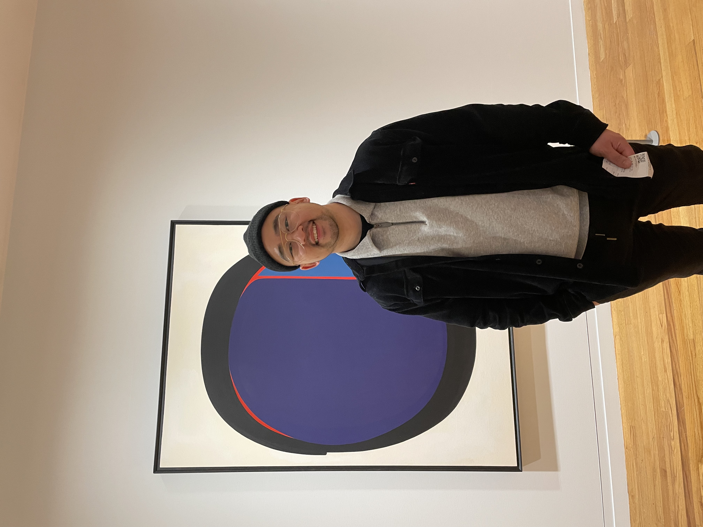
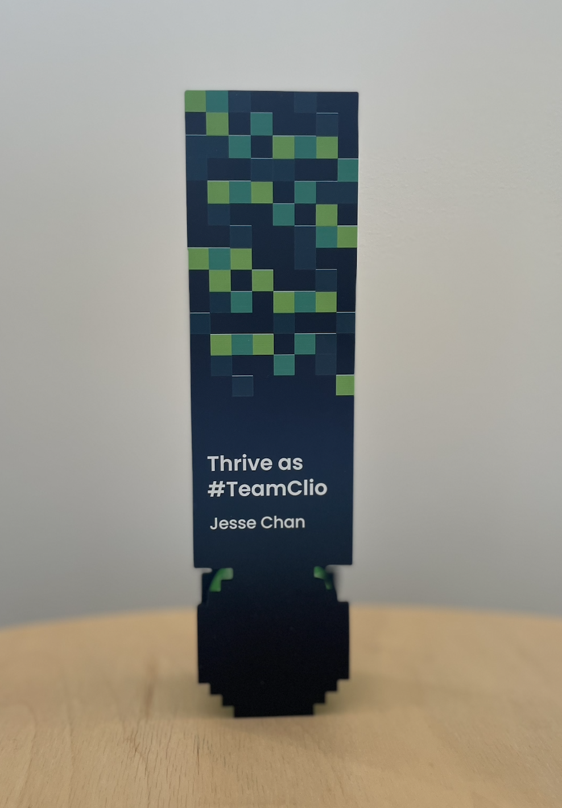

Jesse Chan

Summary
Working in Legal SaaS Industry, learning code to expand technical knowledge.
Education
- Simon Fraser University, Certificate, Police Studies (2016-2017)
- Simon Fraser University, Bachelor of Arts - BA, Criminology (2013-2017)
Work Experience
Solutions Engineer - Clio, Themis Solutions Inc.
Nov 2021 - Present
- Support Account Executives on complex deals
- Work with product and customer support teams
SDR - Clio, Themis Solutions Inc.
Jan 2020 - Nov 2021
- Converted Warm Leads from Marketing to Qualified Opportunnies for Account Executives
- Reached out to potential Clio Clients via phone, chat, and email
Customer Support Specalist - Clio, Themis Solutions Inc.
Aug 2018 - Jan 2020
- Ensured timely support through 3 main channels: emails, phone calls and online chats.
- Employed troubleshooting skills to isolate and resolve issues.
Skills
- Working knowledge of Restful APIs
- Able to breakdown complex technical conceps into layman's terms
- Experience with SaaS tools including:
- Salesforce
- Zendesk
- Talk Desk
- SalesLoft
- Clio
- G-suite
- Zoom
- Slack
- Experience supporting Legal Professionals via phone, chat, and email.
- Basic working knowledge of HTML & CSS.
Volunteer Experience
Crisis Line Worker - Vancouver Crisis Centre
June 2016 - Sep 2017
- Answered calls from 1-800 SUICIDE, 310 Mental Health, Senior's Line and General Distress Line.
- Worked with both emergency services and referral agencies depending on needs of caller.
- Adhered to minimum of one 4 hour shift per week and 8 overnight shifts per year.
Awards and Certifications
Thrive as #TeamClio Award - Clio (2023)
- Awarded to Top Performing teams of the year.

Other